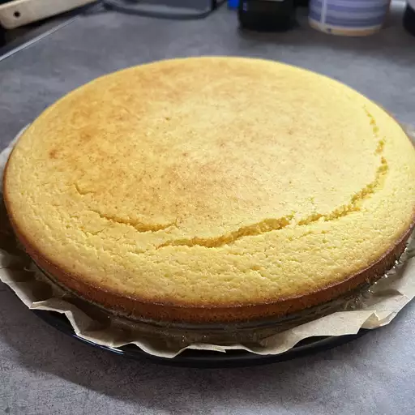

Cornbread

Description
This simple recipe is a cast-iron favorite! Start your oven, butter your pan, and get to mixing!
Ingredients
- Corn flour
- Sugar
- Salt
- Baking powder
- Buttermilk
- Eggs
Steps
- Set oven to 400F, place cast iron to heat with oven
- Mix dry ingredients
- In separate bowl, mix eggs, then add wet ingredients
- Combine dry and wet ingredients
- Carefully remove the cast iron pan from the oven. Pour in mixture and place back in oven for 20minutes.
- Check 15 minutes in. Cornbread is done when it is golden brown.